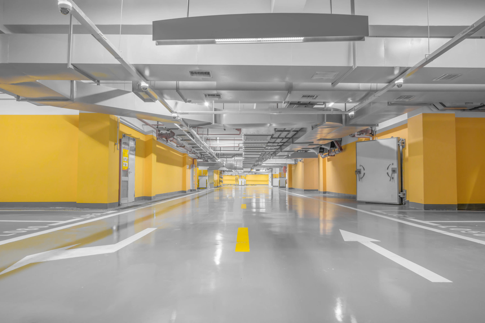

Walk into any home or business and the floor is usually the last thing people notice—unless it looks so good it steals the show. That’s where epoxy floors in Austin step in. They’re strong, they’re shiny, and they make regular concrete floors look like they’ve been living in the dark ages.
Now, you might be wondering, “Are epoxy floors really worth it?” The short answer is yes. In Austin, epoxy flooring has become a trusted choice for homeowners and businesses that want something tough, stylish, and easy to clean. With experts like Epoxy Floors Ausin, you’re not just getting a floor; you’re getting a floor that can take a beating and still look like it belongs in a showroom.
Epoxy floors are not just painted concrete. Think of it like this: paint is like cheap sunglasses, while epoxy is like designer shades with UV protection. One peels off after a while, the other lasts and actually does its job.
The secret behind epoxy’s strength lies in its chemical makeup. When epoxy resin and hardener mix, they form a surface so strong that even heavy equipment, cars, or those wild dance parties in your garage won’t damage it. In Austin, where the weather can be hot one day and unpredictable the next, having a flooring option that doesn’t crack or wear out is a big win.
What’s more, epoxy flooring doesn’t just protect concrete—it makes it look sleek and professional. Imagine walking into a garage that feels like a polished car showroom, or a kitchen floor that reflects light in a way that makes the space brighter. That’s the kind of impact epoxy brings to the table.
And let’s be honest—Austin has its own style. The city loves things that are both practical and good-looking. Epoxy fits perfectly into that vibe. It’s functional enough for a mechanic’s workshop but stylish enough for a modern living room.
The best way to understand why epoxy floors are taking over Austin is to break down the benefits.
First, they’re extremely durable. Unlike tile or wood, epoxy doesn’t chip easily. You don’t have to worry about scratches from moving furniture or your pet’s claws testing their luck. If you’ve got kids who like to turn the living room into a racetrack for toy cars, epoxy can handle it.
Second, epoxy floors are easy to clean. A quick sweep or mop is usually enough to make them shine. Spills? No problem. Oil in the garage? Just wipe it away. This makes epoxy a dream floor for both homeowners and business owners who want to spend more time enjoying their space and less time scrubbing it.
Third, the design possibilities are wide. Epoxy isn’t limited to one look. It can be glossy, matte, or even designed with colors that match your brand if you’re using it for a commercial space. In Austin, where style matters, that flexibility is a big plus.
Finally, epoxy adds value to your property. If you ever sell your house or want to impress customers at your business, a clean, modern epoxy floor instantly sends a message: this place is well cared for.
Here’s the thing: epoxy floors look easy when they’re finished, but installing them isn’t a weekend project unless you want a floor full of bubbles and uneven patches. Austin homeowners and businesses turn to specialists because professionals know how to prepare the surface, mix the materials, and apply the coating so it lasts for years.
Epoxy in Austin has built its reputation on being the go-to team for this job. They don’t just pour and leave; they make sure every inch of the floor is coated properly, giving you a surface that can handle Austin’s busy lifestyle.
Think of it like cooking barbecue. Sure, anyone can throw meat on a grill, but only pitmasters know how to get that perfect slow-cooked flavor. Epoxy is the same way—it looks simple, but it takes skill to make it perfect.
Epoxy floors are no longer just for garages. Homeowners in Austin are bringing them inside, and for good reason.
In kitchens, epoxy floors handle spills better than most materials. Drop spaghetti sauce? No stain. Spill wine? Wipe it up and nobody will ever know. In bathrooms, epoxy floors resist water damage, so you don’t have to deal with mold or rot the way you might with wood or carpet.
Even living rooms are getting the epoxy treatment. With modern finishes, epoxy doesn’t just look industrial—it can look elegant. Add in a glossy coat, and suddenly your space feels bigger and brighter.
Garages, of course, remain one of the most popular spaces for epoxy. If you love cars, a garage with an epoxy floor feels like a mini showroom. If you just want a clean space to store things, epoxy makes sweeping out dust and dirt much easier.
Austin isn’t just a city of homes; it’s also packed with restaurants, shops, offices, and warehouses. Epoxy flooring fits into all these spaces perfectly.
For restaurants, epoxy is ideal because it’s easy to clean and can handle spills, grease, and heavy foot traffic. For retail shops, epoxy floors can be styled to match the brand, creating an inviting space for customers. For warehouses, epoxy gives workers a safe, non-slip surface while protecting the concrete underneath.
In Austin’s fast-growing business scene, presentation matters. Customers notice details, and a polished floor says a lot about how a company operates. That’s why more businesses are turning to epoxy as their flooring of choice.
One of the biggest selling points of epoxy flooring is its lifespan. With proper installation and a little maintenance, epoxy floors can last more than a decade. Compare that with carpet, which stains, or tile, which cracks, and you can see why epoxy is considered a smarter investment.
Austin’s climate can be tough on flooring, especially when temperatures swing from hot summers to cool winters. Epoxy stands up to the challenge because it bonds directly to the concrete, creating a protective layer that doesn’t peel away easily.
The key, though, is professional installation. A poorly installed epoxy floor won’t last long, but with specialists like Epoxy in Austin, the results speak for themselves.
If you’ve been thinking about upgrading your floors, the team at Epoxy in Austin is ready to make it happen. They’re trusted specialists with years of experience turning boring concrete into surfaces that shine.
What sets them apart is their attention to detail and commitment to quality. They don’t cut corners, and they know Austin homeowners and business owners expect results that last.
Whether it’s your garage, living room, office, or restaurant, these epoxy experts know how to give you a floor that’s strong, stylish, and built to last.
At the end of the day, epoxy floors in Austin aren’t just about looks—they’re about strength, practicality, and style all rolled into one. They’re floors that can take whatever life throws at them, while still making your space look polished and professional.
So if you’re tired of floors that stain, chip, or just look outdated, it might be time to upgrade. And when you do, trust the specialists at Epoxy in Austin to give your space the kind of flooring it deserves.
After all, life’s too short for boring floors.